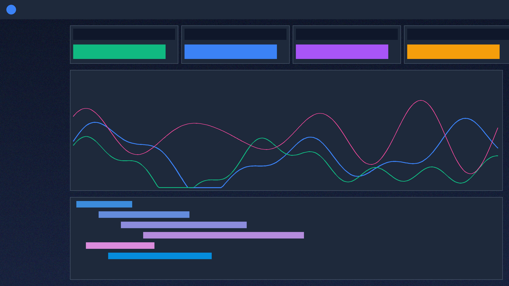
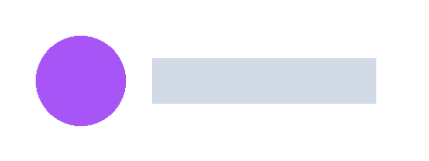
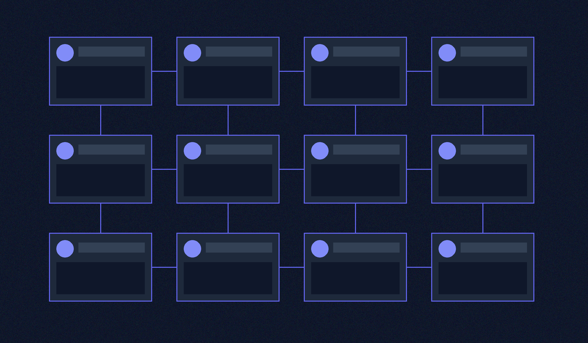
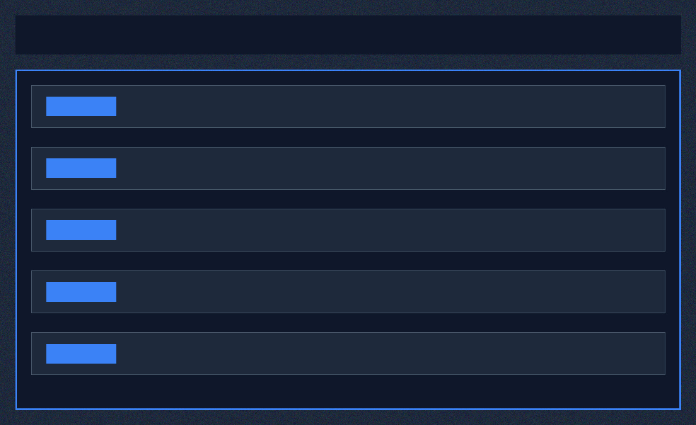
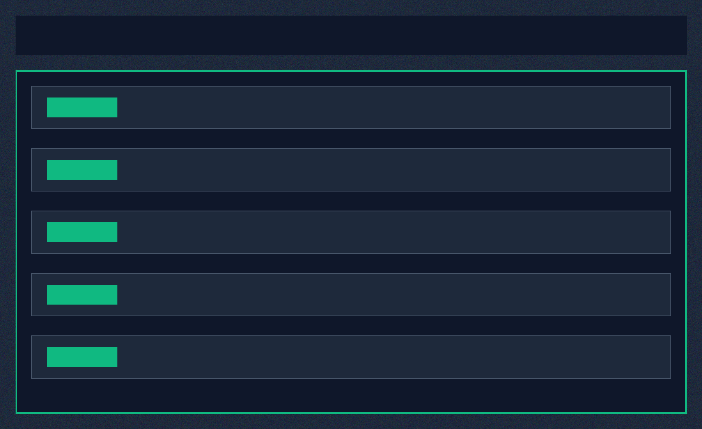
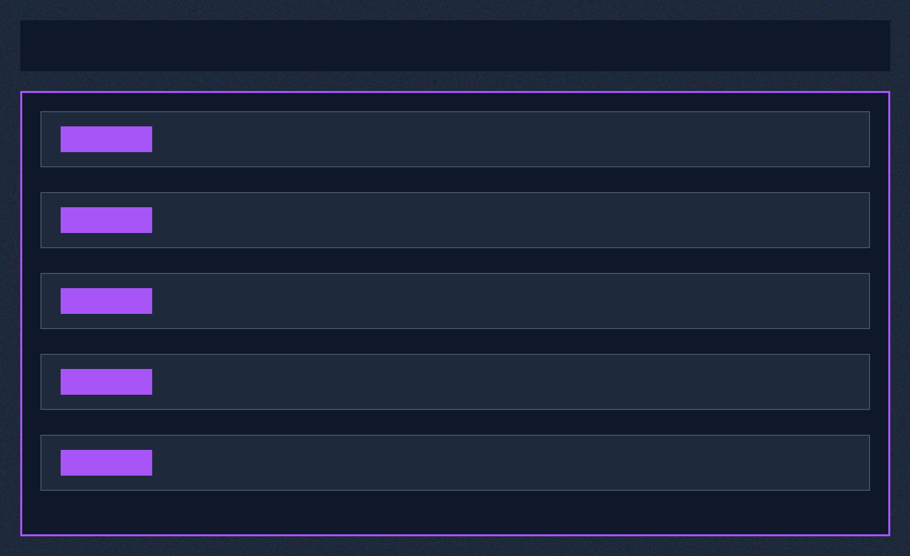

Consolidate multi-cloud metrics, streaming logs, and distributed APM traces into a single high-throughput engine. Reduce MTTR by 64% with sub-millisecond trace ingestion and automated anomaly detection.

Trusted by high-throughput platform engineering teams

Live global metrics captured via eBPF instrumentation without bytecode injection
ApexPulse leverages kernel-level eBPF probes combined with a columnar time-series storage backend. Capture 100% of network packets, HTTP payloads, and database queries with less than 0.8% CPU footprint.

Break down data silos with seamless cross-telemetry correlation

Track request spans across multi-cloud Kubernetes clusters with automated bottleneck tagging.

Ingest millions of metric points per second with nanosecond precision and automated forecasting.
Search petabytes of application logs instantaneously with structured schema extraction.

Identify idle pods and unindexed telemetry fields to trim enterprise cloud spend by up to 35%.
Pay only for active telemetry ingested with predictable volume discounts